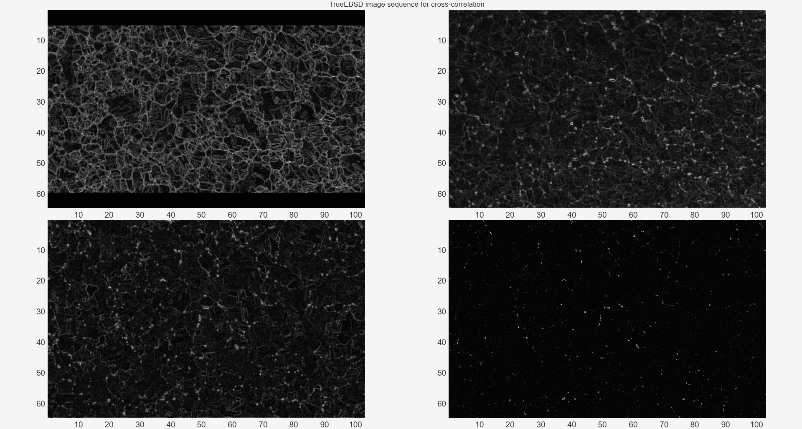
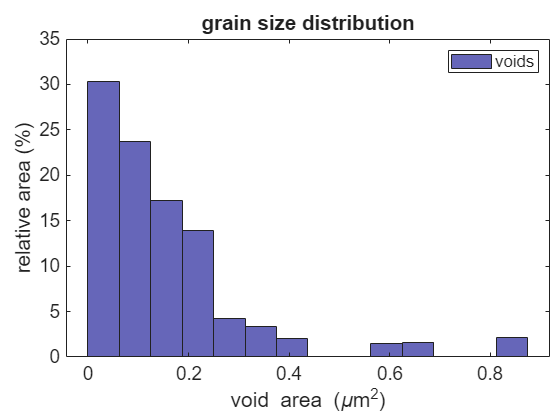
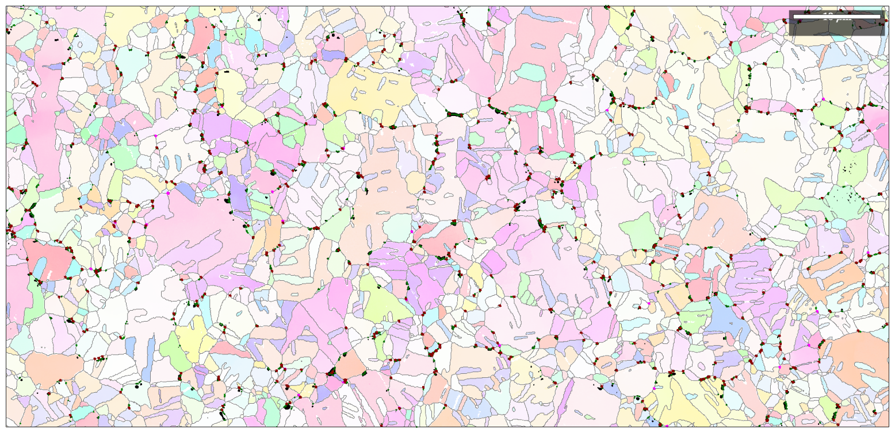

Contents
- MTEX TrueEBSD for analysing grain boundary voids in a copper polycrystal
- Add trueEBSD related MATLAB paths
- Data Import
- Set up TrueEBSD job
- Resize images to match pixel size and FOV
- Calculate local image shifts and fit to a distortion model
- Compute image shifts
- Undistort images
- Plot images after distortion correction
- Plot data as MTEX EBSD maps
- Futher analysis
- Update EBSD phase assignment according to BSE image
- %% Calculate void size and shape distributions
- Plot void size histogram
- Calculate copper grains and boundaries
- Find nearest g.b. per copper void
- 2. Construct an EBSD map voidsMapGb showing the locations of all voids,
- 3. Find closest g.b. and t.p. to each void
- 4. Separate out voids on the boundary vs close to the boundary (could be
- grain boundary statistics using misorientation distribution function
- Plot misorientation distributions
MTEX TrueEBSD for analysing grain boundary voids in a copper polycrystal
authors: Vivian Tong, National Physical Laboratory, Teddington, UK; Contact: vivian.tong@npl.co.uk
Description: Example script to run trueEBSD workflow MATLAB R2024a and mtex version forked from feature/grain3d, approx mtex6.0.beta3
Inputs:
Outputs: Published html file containing code and outputs
Version control 20241001 - create TrueEBSD example script using ID29 data (not released).
clear; close all; home; % TrueEBSD version ID vId = '20240916 / app version 1.2.1';
Add trueEBSD related MATLAB paths
addpath(genpath(cd));
Data Import
Begin by loading the EBSD map and associated SEM images from the Oxford Instruments *.h5oina file.
The SEM image pixel size is stored in the same *.h5oina file, in the Image header data.
- Band contrast (ebsd.bc) is used as the image for the EBSD map.
- fsd1B is a colour image from the three FSD detectors mounted at the bottom of the EBSD camera, and the EBSD camera is retracted by 40 mm relative to the EBSD map acquisition position;
- bse1 is a greyscale image acquired using the annular backscatter (ABS) detector at 10 kV and 0 degrees sample tilt. We can filter this in two ways to enhance different types of image contrast: bse1a has gamma compression applied to enhance grain boundary contrast, and bse1b uses a moving median filter to preserve edge contrast of voids in the denoised image.
tic ebsd = gridify(rotate(... loadEBSD_h5oina("copper29.h5oina"),... reflection(xvector),'keepEuler')); ebsd.plottingConvention = plottingConvention(vector3d.Z,-vector3d.X); display(ebsd); display(ebsd.opt.Images);
Now we extract a reference image which has good contrast for finding the grain boundary voids, and an intermediate image to help with matching to the EBSD map features.
fsd1B = rescale(im2double(cat(3,ebsd.opt.Images.Lower_Centre_19, ... ebsd.opt.Images.Lower_Left_19, ... ebsd.opt.Images.Lower_Right_19))); bse1 = rescale(im2double(ebsd.opt.Images.ABSinner_0deg));
Warning: Please make sure that you correct for the very probable inconsitencies
between coordinate systems. Example:
rot = rotation.byAxisAngle(yvector,180*degree)
ebsd = rotate(ebsd,rot,'keepXY')
ebsd = EBSDsquare
Phase Orientations Mineral Color Symmetry Crystal reference frame
0 52244 (9.3%) notIndexed
1 511713 (91%) Copper LightSkyBlue m-3m
Properties: x, y, bc, bs, bands, MAD, quality, oldId
Scan unit : um
Grid size (square): 547 x 1031
Header: <a href="matlab:dispStruct(pullTemp(17))">show struct</a>
Images: <a href="matlab:dispStruct(pullTemp(18))">show struct</a>
struct with fields:
Lower_Centre_19: [1280×2048 double]
Lower_Centre_20: [1280×2048 double]
Lower_Centre_21: [1280×2048 double]
Lower_Left_19: [1280×2048 double]
Lower_Left_20: [1280×2048 double]
Lower_Left_21: [1280×2048 double]
Lower_Right_19: [1280×2048 double]
Lower_Right_20: [1280×2048 double]
Lower_Right_21: [1280×2048 double]
Upper_Left_19: [1280×2048 double]
Upper_Left_20: [1280×2048 double]
Upper_Left_21: [1280×2048 double]
Upper_Right_19: [1280×2048 double]
Upper_Right_20: [1280×2048 double]
Upper_Right_21: [1280×2048 double]
ABSinner_0deg: [1280×2048 double]
CBS_0deg_immersion: [1280×2048 double]
CBS_0deg_immersion_20kV: [1280×2048 double]
CBSab_0deg: [1280×2048 double]
ETD_0deg: [1280×2048 double]
ETD_70deg: [1280×2048 double]
T1_0deg: [1280×2048 double]
T1_0deg_immersion: [1280×2048 double]
T1_70deg: [1280×2048 double]
Header: [1×1 struct]
Do some image pre-processing to help us with
fsd1a = imboxfilt(fsd1B,5);
bse1a = imboxfilt(nthroot(bse1,0.1),5);
bse1b = medfilt2(bse1,[3 3],'symmetric');
Set up TrueEBSD job
@distortedImg imgList{n} is a TrueEBSD class containing information about an image or EBSD map and its distortion type relative to the next [(n+1)th] image in the sequence. The final reference image bse1b has very low grain boundary contrast, so we set the 'highContrast' flag to 0.
% Construct distortedImg list and set up trueEBSD job dataName = 'trueEbsdCopper'; % Construct @distortedImg imgList{:} imgList=cell(1,4); imgList{1} = distortedImg('bc','drift-shift', ebsd, 'mapPlottingConvention', ebsd.plottingConvention, 'highContrast',1,'edgePadWidth',3); imgList{2} = distortedImg(fsd1a,'tilt', 'dxy', double(ebsd.opt.Images.Header.X_Step), 'highContrast',1,'edgePadWidth',3); % imgList{3} = distortedImg(bse1a,'true', 'dxy', double(ebsd.opt.Images.Header.X_Step), 'highContrast',1,'edgePadWidth',3); % imgList{4} = distortedImg(bse1b,'true', 'dxy', double(ebsd.opt.Images.Header.X_Step), 'highContrast',0,'edgePadWidth',1); % BSE but with pores only
job is a @trueEbsd object containing a sequence of @distortedImg images.
The starting data for the TrueEBSD workflow are stored in job.imgList.
job = trueEbsd(imgList{:});
Plot as-imported image sequence to check they are all of similar regions on the sample, but the image contrasts look quite different.
figure('WindowState', 'maximized'); t=tiledlayout('flow','TileSpacing','tight','Padding','tight'); title(t,'TrueEBSD starting image sequence'); for n=1:numel(imgList) nexttile; imagesc('XData',imgList{n}.dx.*(1:size(imgList{n}.img,2)),... 'YData',imgList{n}.dy*(1:size(imgList{n}.img,1)),... 'CData',imgList{n}.img); colormap gray; axis image on ij; end linkaxes; t1 = toc; disp(['Finished set up trueEBSD job for ' dataName ' in ' num2str(t1,'%.1f') ' seconds']);
Finished set up trueEBSD job for trueEbsdCopper in 5.3 seconds
Resize images to match pixel size and FOV
The EBSD map and images in job.imgList{:} are of the same sample area but have different pixel sizes. Here, we match up the pixel positions of the the image sequence in job.imgList{:}.
Inputs - distorted image sequence job.imgList{:}, target pixel size pixSzIn
Outputs - distorted image sequence on a common pixel grid job.resizedList{:}.
pixSzIn = 0; % target pixel length in microns, or 0 to default to smallest common pixel size
job = pixelSizeMatch(job,pixSzIn);
Now job has a new property job.resizedList, which is where the outputs of pixelSizeMatch are stored.
display(job); t1 = toc; disp(['Finished resize images to match pixel size and FOV for ' dataName ' in ' num2str(t1,'%.1f') ' seconds']);
using default pixel size of 0.050355 um, minimum from imgList
job =
trueEbsd with properties:
imgList: {4×1 cell}
resizedList: {4×1 cell}
undistortedList: {[1×1 distortedImg]}
shifts: {}
Finished resize images to match pixel size and FOV for trueEbsdCopper in 16.8 seconds
Calculate local image shifts and fit to a distortion model
Now we compute local image ROI shifts and fit them to distortion models. After each image correction step, the average ROI shifts (X, Y and length components) are printed to the command window.
Images 4 and 3 are the same SEM image filtered using two methods, so there is no distortion between them -- we had set this up in the input data as job.imgList{1}.distortionName = 'true'. In this case, TrueEBSD assumes that all the shifts between this image pair are zero and does not compute them from ROI cross-correlation.
The 'fitErr' flag means that residual local image shifts are recomputed after image correction but not included in the final result. If this number is small (around 1 pixel or less) then most likely the image registration was successful.
These are the image pairs that will be used for cross-correlation.
figure('WindowState', 'maximized'); t=tiledlayout('flow','TileSpacing','tight','Padding','tight'); title(t,'TrueEBSD image sequence for cross-correlation'); for n=1:numel(job.resizedList) nexttile; imagesc('XData',job.resizedList{n}.dx.*(1:size(job.resizedList{n}.img,2)),... 'YData',job.resizedList{n}.dy*(1:size(job.resizedList{n}.img,1)),... 'CData',job.resizedList{n}.(job.resizedList{n}.setXCF{1}.xcfImg)); colormap gray; axis image on ij; end linkaxes;
Compute image shifts
job = calcShifts(job,'fitErr');
Now job has a new property job.shifts, which is where the outputs of calcShifts are stored.
display(job); t1 = toc; disp(['Finished calculate image shifts and fit distortion models for ' dataName ' in ' num2str(t1,'%.1f') ' seconds']);
Calculating shifts between images 2 and 1 (drift-shift):
Mean X-shift length 5.9983 pixels
Mean Y-shift length 67.5257 pixels
Mean shift length 67.7934 pixels
Mean X-shift length 0.21519 pixels
Mean Y-shift length 0.68027 pixels
Mean shift length 0.75248 pixels
Residual shifts / pixels between images 2 and 1 (drift-shift)
Mean X-shift length 0.16058 pixels
Mean Y-shift length 0.40172 pixels
Mean shift length 0.46744 pixels
Calculating shifts between images 3 and 2 (tilt):
Warning: Iteration limit reached.
Mean X-shift length 35.2866 pixels
Mean Y-shift length 121.624 pixels
Mean shift length 126.7673 pixels
Mean X-shift length 2.5242 pixels
Mean Y-shift length 3.8541 pixels
Mean shift length 5.2477 pixels
Mean X-shift length 0.4013 pixels
Mean Y-shift length 1.268 pixels
Mean shift length 1.3991 pixels
Residual shifts / pixels between images 3 and 2 (tilt)
Mean X-shift length 0.19989 pixels
Mean Y-shift length 1.1894 pixels
Mean shift length 1.2256 pixels
Calculating shifts between images 4 and 3 (true):
Mean X-shift length 0 pixels
Mean Y-shift length 0 pixels
Mean shift length 0 pixels
Residual shifts / pixels between images 4 and 3 (true)
Mean X-shift length 0.66522 pixels
Mean Y-shift length 0.57082 pixels
Mean shift length 0.90142 pixels
job =
trueEbsd with properties:
imgList: {4×1 cell}
resizedList: {4×1 cell}
undistortedList: {[1×1 distortedImg]}
shifts: {{1×2 cell} {1×3 cell} {1×1 cell}}
Finished calculate image shifts and fit distortion models for trueEbsdCopper in 275.6 seconds
 Undistort images
This applies the image shifts between each image pair in job.shifts to the data in job.resizedList, and outputs a new property job.undistortedList which contains aligned image data. Now all pixels in this image sequence can be directly overlaid.
job = undistort(job);
Plot images after distortion correction
figure('WindowState', 'maximized'); t=tiledlayout('flow','TileSpacing','tight','Padding','tight'); title(t,'TrueEBSD image sequence after alignment'); for n=1:numel(job.undistortedList) nexttile; imagesc('XData',job.undistortedList{n}.dx.*(1:size(job.undistortedList{n}.img,2)),... 'YData',job.undistortedList{n}.dy*(1:size(job.undistortedList{n}.img,1)),... 'CData',job.undistortedList{n}.img); colormap gray; axis image on ij; end linkaxes; t1 = toc; disp(['Finished remove image distortions for ' dataName ' in ' num2str(t1,'%.1f') ' seconds']);
Finished remove image distortions for trueEbsdCopper in 681.5 seconds
Plot data as MTEX EBSD maps
We can also plot all images as MTEX EBSD maps. This is a good check to make sure images are not indexed 'upside down' relative to the EBSD map. Since images are usually stored and read by MATLAB using the 'axis ij' convention, but EBSD maps can have other kinds of plotting convention defined in ebsd.plottingConvention, we need the ij2EbsdSquare helper function to rotate the image data into the ebsd map plottingConvention.
figure;
nextAxis;
plot(job.undistortedList{1}.ebsd('indexed'), job.undistortedList{1}.ebsd('indexed').orientations, ...
job.undistortedList{1}.ebsd.plottingConvention,'coordinates','on');
title('Undistorted MTEX EBSD map (Copper IPF-out of screen)','Color','k');
for n=1:numel(job.undistortedList)
nextAxis;
plot(job.undistortedList{1}.ebsd, ...
ij2EbsdSquare(job.undistortedList{1}.ebsd,job.undistortedList{n}.img), ...
job.undistortedList{1}.ebsd.plottingConvention,'coordinates','on');
mtexColorMap gray;
title(['Undistorted MTEX image ' num2str(n)],'Color','k');
end
I'm going to colorize the orientation data with the standard MTEX ipf colorkey. To view the colorkey do: ipfKey = ipfColorKey(ori_variable_name) plot(ipfKey)
This is the end of the TrueEBSD distortion correction workflow.
t1 = toc; disp(['Finished TrueEBSD workflow for ' dataName ' in ' num2str(t1,'%.1f') ' seconds.']);
Finished TrueEBSD workflow for trueEbsdCopper in 714.5 seconds.
Futher analysis
For this dataset, we want to find out if there are preferred void nucleation sites at grain boundaries or triple junctions.
disp('Continuing onto grain boundary voids analysis.');
Continuing onto grain boundary voids analysis.
First we extract EBSD map and BSE image with voids contrast from the TrueEBSD processed data.
ebsd = job.undistortedList{1}.ebsd;
bse = job.undistortedList{4}.img;
We need to crop both the EBSD map and BSE image to the largest rectangle that contains the EBSD map information.
[~,~,~,keepGrid] = FindLargestRectangles(~isnan(job.undistortedList{1}.img));
ebsd = gridify(ebsd(ij2EbsdSquare(ebsd,keepGrid)));
% ebsd forgets its plottingConvention after gridify so we remind it here
ebsd.plottingConvention = job.undistortedList{1}.mapPlottingConvention;
%repeat for binarised reference image
bse = reshape(bse(keepGrid),size(ebsd));
Update EBSD phase assignment according to BSE image
phasesBse = ij2EbsdSquare(ebsd,(bse<0.8)); %voids = 1, copper = 0. voidPhase = crystalSymmetry('1','mineral','voids','color',str2rgb('DarkBlue')); ebsd(phasesBse).rotations = rotation('euler',0,0,0); ebsd(phasesBse).CS = voidPhase; ebsd = gridify(ebsd); ebsd.plottingConvention = job.undistortedList{1}.mapPlottingConvention; display(ebsd);
ebsd = EBSDsquare
Phase Orientations Mineral Color Symmetry Crystal reference frame
0 175790 (9.1%) notIndexed
1 1739976 (90%) Copper LightSkyBlue m-3m
2 13834 (0.72%) voids DarkBlue 1 X||a*, Y||b*, Z||c*
Properties: x, y, bc, bs, bands, MAD, quality, oldId
Scan unit : um
Grid size (square): 960 x 2010
%% Calculate void size and shape distributions
[grainsVoids] = calcGrains(ebsd('indexed'),'angle',10*degree); display(grainsVoids('voids'));
= grain2d
Phase Grains Pixels Mineral Symmetry Crystal reference frame
2 683 13834 voids 1 X||a*, Y||b*, Z||c*
<a href="matlab:.boundary">boundary segments</a>: 13287 (690 µm)
<a href="matlab:.innerBoundary">inner boundary segments</a>: 0 (0 µm)
<a href="matlab:.triplePoints">triple points</a>: 1243
Properties: meanRotation, GOS
Plot void size histogram
most voids are quite small, about 10 pixels big.
figure; histogram(grainsVoids('voids'),grainsVoids('voids').area); xlabel('void area ({\mu}m^2)'); figure; histogram(grainsVoids('voids'),grainsVoids('voids').grainSize,50); xlabel('void area (pixels)'); set(gca,'InnerPosition',[66.6000 65.0000 484.4000 335.5000]);
Calculate copper grains and boundaries
When we reconstruct copper grains, we select the copper phase only (ebsdCopper).
By excluding the 'voids' phase in calcGrains, the grain boundaries will be drawn through the voids instead of around them.
We also fill in all the missing points in the ebsdCopper map, and pass in the ebsd('Copper').grainId property when using EBSD/fill. This will make finding the void positions relative the the grain boundary easier later, because we can identify each grain boundary segment by its neighbour EBSD map points (gBs.ebsdId).
[~,ebsd('Copper').grainId] = calcGrains(ebsd('Copper'),'angle',10*degree); ebsdCopper = gridify(smooth(ebsd('Copper'),'fill')); ebsdCopper.plottingConvention=ebsd.plottingConvention; [grains,ebsdCopper('Copper').grainId] = calcGrains(ebsdCopper('Copper'),'angle',10*degree); %redraw boundaries using new contour algorithm grains = boundaryContours(grains); % explicitly specify copper-copper boundaries to exclude map border gBs = grains.boundary('Copper','Copper'); % use grain boundary segment triplets instead of triplePoints so that we % can treat them in the same way as gBs tPs = grains.triplePoints('Copper','Copper','Copper'); tPGbs = grains.boundary(tPs.boundaryId);
plot ebsd map with voids overlaid
figure; newMtexFigure('layout',[2,1]); nextAxis; plot(ebsd,ebsd.bc,ebsd.plottingConvention,'micronbar','off'); mtexColorMap gray; hold on; plot(ebsd('indexed'),ebsd.plottingConvention,'FaceAlpha',0.7); mtexTitle('Band Contrast and Phases'); nextAxis; plot(ebsd('Copper'),ebsd('Copper').orientations,'FaceAlpha',0.5,... ebsd.plottingConvention,'micronbar','on'); hold on; plot(gBs,ebsd.plottingConvention,'linewidth',1,'linecolor','g'); plot(tPGbs,ebsd.plottingConvention,'linewidth',2,'linecolor','m'); plot(ebsd('voids'),zeros(size(ebsd('voids'))),ebsd.plottingConvention); mtexTitle('Copper Orientations (IPF-out of screen), Grain Boundaries and Voids');
I'm going to colorize the orientation data with the standard MTEX ipf colorkey. To view the colorkey do: ipfKey = ipfColorKey(ori_variable_name) plot(ipfKey)
Find nearest g.b. per copper void
We want to find out whether certain grain boundaries or triple junctions are more or less susceptible to void nucleation.
Every grain boundary segment in gBs runs between two neighbour EBSD map points stored in gBs.ebsdId. Let's construct an EBSD map gbPosMap that shows all EBSD map points that border a grain boundary segment by its index to gBs.
gbPosMap = zeros(size(ebsdCopper)); [gbEbsdIdList,ia,ic]=unique(gBs.ebsdId,'stable'); % ia are linear indices to unique values of gBs.ebsdId % gBIdList are row indices to gBs gBIdList = repmat([1:length(gBs)]',[1,2]); % gbPosMap is an ebsd map, nonzero values are indices to gBs gbPosMap(id2ind(ebsdCopper,gbEbsdIdList))=gBIdList(ia); % repeat for tPs tpPosMap = zeros(size(ebsdCopper)); [tpEbsdIdList,ia,ic]=unique(tPGbs.ebsdId,'stable'); tpIdList = repmat([1:length(tPGbs)]',[1,2]); tpPosMap(id2ind(ebsdCopper,tpEbsdIdList))=tpIdList(ia); %tPGbs indices
Indexing can get a bit confusing, so plot figures as we go to show what these variables are.
figure; nextAxis; plot(ebsdCopper,gbPosMap,ebsdCopper.plottingConvention); colormap gray; hold on; mtexColorbar; plot(gBs,ebsdCopper.plottingConvention,'lineColor','g'); nextAxis; plot(ebsdCopper,tpPosMap,ebsdCopper.plottingConvention); colormap gray; hold on; mtexColorbar; plot(gBs,ebsdCopper.plottingConvention,'lineColor','g'); plot(tPGbs,ebsdCopper.plottingConvention,'lineColor','m','lineWidth',1);
Now we can find the gb and tp nearest to each void pixel
1. Compute distance of all EBSD map positions from nearest grain boundary (gbDist) and the nearest grain boundary at every EBSD map position (gbNearest).
[gbDist, ix]=bwdist(gbPosMap); % ix are linear indices of gbPosMap
gbNearest=gbPosMap(ix);
repeat for tPs
[tpDist, ix]=bwdist(tpPosMap); tpNearest=tpPosMap(ix); figure; newMtexFigure('layout',[2,2]); nextAxis; plot(ebsdCopper,gbDist); colormap gray; hold on; mtexColorbar; plot(gBs,'lineColor','g'); nextAxis; plot(ebsdCopper,gbNearest); colormap gray; hold on; mtexColorbar; plot(gBs,'lineColor','g'); nextAxis; plot(ebsdCopper,tpDist); colormap gray; hold on; mtexColorbar; plot(tPGbs,'lineColor','m','lineWidth',1); nextAxis; plot(ebsdCopper,tpNearest); colormap gray; hold on; mtexColorbar; plot(tPGbs,'lineColor','m','lineWidth',1);
2. Construct an EBSD map voidsMapGb showing the locations of all voids,
where void pixels = nearest gbId and not-voids = 0.
voidsMapgb = nan(size(ebsd)); voidsMapgb(ebsd.phase==ebsd('voids').phase(1))= gbNearest(ebsd.phase==ebsd('voids').phase(1)); %indices to gBs
and same for tPs
voidsMaptp = nan(size(ebsd)); voidsMaptp(ebsd.phase==ebsd('voids').phase(1))= tpNearest(ebsd.phase==ebsd('voids').phase(1)); %indices to tPGbs
3. Find closest g.b. and t.p. to each void
we only find intersections between voids and gbs, because the voids cover up the copper-copper boundaries.
voidsListGb lists the nearest grain boundary segment to every void pixel.
voidsListTp lists the nearest triple point gbs to every void pixel.
voidsDistGb is the distance to the nearest grain boundary for all the EBSD map points in voidsListGb. (and similar for voidsDistTp).
voidsListgb = unique(voidsMapgb(~isnan(voidsMapgb))); voidsDistgb=(~isnan(voidsMapgb)) .* gbDist; %distance from void to nearest gB in pixels % also include the other g.b. segments in the triple junction [r,~] = ind2sub(size(tPs.boundaryId),unique(voidsMaptp(~isnan(voidsMaptp)))); voidsListtp = sub2ind(size(tPs.boundaryId),repmat(r(:),[1 3]),repmat([1:3],[numel(r) 1])); voidsDisttp=~isnan(voidsMaptp) .* tpDist; %distance from void to nearest tp in pixels figure; newMtexFigure('layout',[2 2]); nextAxis; plot(ebsdCopper,voidsMapgb); colormap gray; hold on; mtexColorbar; plot(gBs(voidsListgb),'lineColor','g'); nextAxis; plot(ebsdCopper,voidsDistgb); colormap gray; hold on; mtexColorbar; plot(gBs(voidsListgb),'lineColor','g'); nextAxis; plot(ebsdCopper,voidsMaptp); colormap gray; hold on; mtexColorbar; plot(tPGbs(voidsListtp),'lineColor','m','lineWidth',1); nextAxis; plot(ebsdCopper,voidsDisttp); colormap gray; hold on; mtexColorbar; plot(tPGbs(voidsListtp),'lineColor','m','lineWidth',1);
4. Separate out voids on the boundary vs close to the boundary (could be
not on the boundary, could be a image matching error)
What does 'close' (vs 'far from the boundary') mean? We can guess a threshold value by summing the TrueEBSD fit residuals (95th percentile).
voidsList_threshPix = prctile(sqrt(job.shifts{1}{1}.fitError.ROI.Shift_X_1.^2 + job.shifts{1}{1}.fitError.ROI.Shift_Y_1.^2),95)...
+ prctile(sqrt(job.shifts{2}{1}.fitError.ROI.Shift_X_1.^2 + job.shifts{2}{1}.fitError.ROI.Shift_Y_1.^2),95) ...
+ prctile(sqrt(job.shifts{3}{1}.fitError.ROI.Shift_X_1.^2 + job.shifts{3}{1}.fitError.ROI.Shift_Y_1.^2),95);
disp(['Threshold distance from g.b. (pixels): ' num2str(voidsList_threshPix)]);
%split |voidsList| into gb segments on, near, and far from a void
voidsListGb_on = voidsMapgb(voidsDistgb<=1 & ~isnan(voidsMapgb));
voidsListGb_near = voidsMapgb(voidsDistgb>1 & voidsDistgb<=voidsList_threshPix & ~isnan(voidsMapgb));
voidsListGb_notNear = voidsMapgb(voidsDistgb>voidsList_threshPix & ~isnan(voidsMapgb));
%Find gb segments in |voidsList_*| that are also triple junctions
% also include the other g.b. segments in the triple junction
% and reunite the triple points with their partner segments
t1 = voidsMaptp(voidsDisttp<=1 & ~isnan(voidsMaptp));
[r,~] = ind2sub(size(tPs.boundaryId),t1);
voidsListTp_on = sub2ind(size(tPs.boundaryId),repmat(r(:),[1 3]),repmat([1:3],[numel(r) 1]));
t1 = voidsMaptp(voidsDisttp>1 & voidsDisttp<=voidsList_threshPix & ~isnan(voidsMaptp));
[r,~] = ind2sub(size(tPs.boundaryId),t1);
voidsListTp_near = sub2ind(size(tPs.boundaryId),repmat(r(:),[1 3]),repmat([1:3],[numel(r) 1]));
voidsListTp_notNear = voidsMaptp(voidsDisttp>voidsList_threshPix & ~isnan(voidsMaptp));
% Now exclude repeats and gb/tp segments that are not near a void
voidsListgb = unique([voidsListGb_on;voidsListGb_near]);
voidsListtp = unique([voidsListTp_on;voidsListTp_near]);
Threshold distance from g.b. (pixels): 4.9532
grain boundary statistics using misorientation distribution function
Compare grain boundary misorientation at voids with the whole sample this is counted per g.b. segment near/on a void, not per void, so big voids that intersect many gb segments will be weighted more than small voids.
mdf_voidsGb = calcDensity(gBs(voidsListgb).misorientation); mdf_voidsTp = calcDensity(gBs(voidsListtp).misorientation); mdf_all = calcDensity(gBs.misorientation); % plot EBSD map with g.b. annotations figure; newMtexFigure; plot(ebsd('Copper'),ebsd('Copper').orientations,'FaceAlpha',0.3,ebsd.plottingConvention); hold on; plot(gBs,ebsd.plottingConvention,'linecolor',str2rgb('gray')); plot(ebsd('voids'),zeros(size(ebsd('voids'))),ebsd.plottingConvention); colormap gray; clim([0 1]); plot(gBs(voidsListGb_on),ebsd.plottingConvention,'linecolor','g','linewidth',2); plot(gBs(voidsListGb_near),ebsd.plottingConvention,'linecolor',str2rgb('DarkGreen'),'linewidth',2); plot(tPGbs(voidsListTp_on),ebsd.plottingConvention,'linecolor','m','linewidth',3); plot(tPGbs(voidsListTp_near),ebsd.plottingConvention,'linecolor',str2rgb('DarkRed'),'linewidth',3);
I'm going to colorize the orientation data with the standard MTEX ipf colorkey. To view the colorkey do: ipfKey = ipfColorKey(ori_variable_name) plot(ipfKey)
Plot misorientation distributions
The next two plot shows that the grain boundaries with around 60 degrees and [111] misorientation are particularly resistant to void formation. These are the sigma-3 twin boundaries in FCC copper.
However, there are no triple junctions types that are particularly resistant to void formation in this material.
figure; newMtexFigure('figSize','tiny','outerplotspacing',30); plotAngleDistribution(mdf_all,'DisplayName','All GBs');hold on plotAngleDistribution(mdf_voidsGb,'DisplayName','Void GBs'); plotAngleDistribution(mdf_voidsTp,'DisplayName','Void TPs'); plotAngleDistribution(ebsd('Copper').CS,ebsd('Copper').CS,'antipodal','DisplayName','Uniform MDF'); legend('show','Location','northwest'); xlabel('Misorientation angle / degrees'); ylabel('Frequency / mrd'); figure; newMtexFigure('layout',[2,2],'figSize','large','outerplotspacing',30,'innerplotspacing',50); nextAxis(1,1); plotAxisDistribution(mdf_all,'colorRange','equal'); mtexTitle('All GBs'); nextAxis(1,2); plotAxisDistribution(mdf_voidsGb,'colorRange','equal'); mtexTitle('Void GBs'); nextAxis(2,1); plotAxisDistribution(mdf_voidsTp,'colorRange','equal'); mtexTitle('Void TPs'); nextAxis(2,2); plotAxisDistribution(ebsd('Copper').CS,ebsd('Copper').CS,'antipodal','colorRange','equal'); mtexTitle('Uniform MDF'); mtexColorbar;


This is the end of the grain boundary voids analysis.
t1 = toc; disp(['Finished grain boundary voids analysis for ' dataName ' in ' num2str(t1,'%.1f') ' seconds, script ends here.']);
Finished grain boundary voids analysis for trueEbsdCopper in 1165.4 seconds, script ends here.